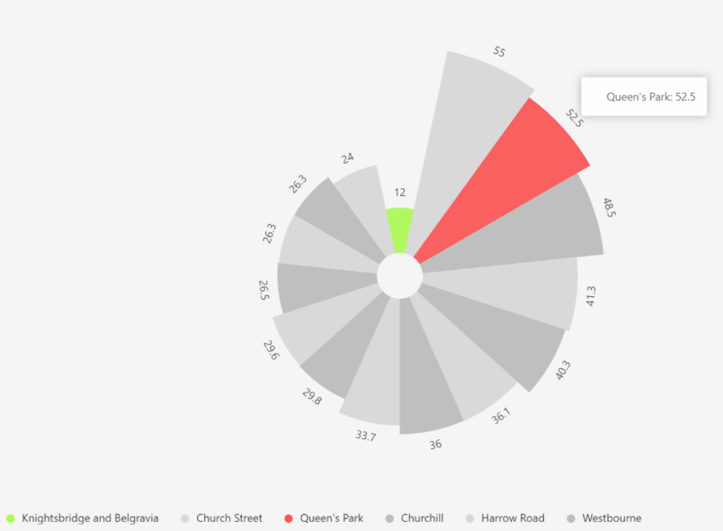
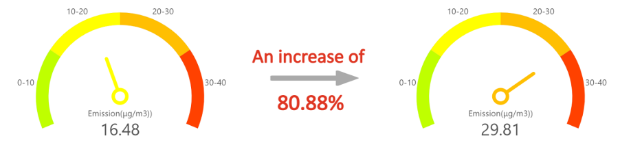

---- Shugui Zhang, 2021/22 MSc UI student with Placement at Westminster City Council
Air pollution is a persistent challenge in major cities globally, and is deeply rooted in transportation patterns. We are immensely proud to spotlight our MSc Urban Informatics students’ role in fortifying our collaboration with the Westminster City Council (WCC). This significant venture targets the enhancement of the city’s air quality monitoring and analysis, with local schools stand at the heart of this vital initiative, addressing the mounting concerns over air pollution. Mr Shugui Zhang, a MSc Urban Informatics student, had been granted the placement at WCC, to showcase his technical acumen with deep compassion on addressing air pollution issue and underscoring the council’s commitment to safeguarding residents.
Queen's Park area, has raised alarms with more than half (52.5%) prevalence symptoms of asthma (Figure 1). It's a daunting statistic that emphasizes the tangible consequences of air pollution. But with a problem this vast, where does one begin? Zhang’s work tried to explore the causes.

Figure 1 Distribution of Asthma Prevalence in major areas of WCC
Thanks to his top-notch training from the MSc Urban Informatics programme, Zhang worked with heaps of detailed data collected by advanced air quality sensors, and applied the skills onto a platform, to turn them into easy-to-understand visualisations (visualisations could be found at https://yusbop.axshare.com/). Such visuals showed how everyday activities, such as traffics around school areas, affected the air quality in the city.
Zhang’s insightful visual displays, as depicted in Figure 2 and Figure 3., have truly served as an intuitive way. Instead of a vague understanding of the air pollution problem, these visuals offered clarity on its specific origins and effects. This newfound clarity provided schools, parents, practitioners and policymakers with precise directions on where to intervene for the greatest positive outcome. One striking revelation from the visuals was the significant spike in emissions during school drop-off times compared to other periods of the day. Notably, there was a marked surge in NO2 emissions in the early hours, with average values progressively rising from 16.48 (μg/m³) to a sharp peak of 29.81 (μg/m³) between 5 am and 9 am. A similar surge was observed during the school pick-up time at the end of the day. This spike can largely be attributed to the influx of private cars, hence the graphics underscore the need for solutions targeting these specific time windows.

Figure 2 Emission increase from 5am to 9am
Figure 3 Emission increase from 12pm to 5pm
The mark of the MSc Urban Informatics programme’s standout teaching method shone through in every aspect of Shugui’s efforts. Besides of his impressive skill in deciphering data, he showcased a natural flair for connecting with people, especially his line manager at the Council, and his ability to bridge the gap between hard data and human conversation stood out. It’s clear that the programme doesn’t just produce Data Scientist but nurtures individuals who are equally at ease in boardrooms and with spreadsheets.
But as we delve deeper into Shugui’s placement takeaways, a broader question emerges: What implications does this have for the broader urban landscape and society at large?
To begin with, the project is a glaring endorsement of the symbiotic relationship between urban planning and data science. At the crossroads of these disciplines, cities have the potential to transition from reactive measures to proactive strategies. The introduction of real-time data into urban governance, made accessible through clear visual narratives, makes it possible to anticipate problems, intervene before they escalate, and devise policies that are not just robust but are also rooted in ground realities.
Furthermore, Shugui’s placement experience underscores the transformative role of academic programmes, like the MSc Urban Informatics, in sculpting the changemakers of tomorrow. These programmes don’t just impart skills; they instil a vision—a vision of cities where technological proficiency meets human-centric solutions. His initiative at WCC is merely a precursor to the cascading changes such structures of education can bring about. It’s a ripple that promises to evolve into a wave of positive urban transformation.
Reflecting on the project’s outcome, the student was deeply struck by the understanding that, alongside the complex urban factors, it’s the daily activities of residents, such as home-school or home-work commutes, that substantially influence the city’s air quality. In this post-pandemic era, where cities like Westminster are redefining their greener and more sustainable futures, Shugui, backed by the MSc Urban Informatics programme and in collaboration with WCC, stands at the vanguard of this evolution, using data to carve out a cleaner, healthier future for all its residents. After all, every breath counts.
(Editor: Xiaowei Gao, Yijing Li)